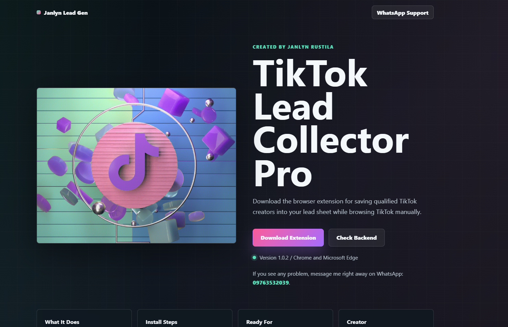
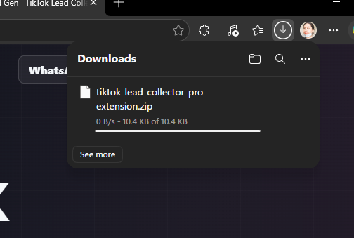
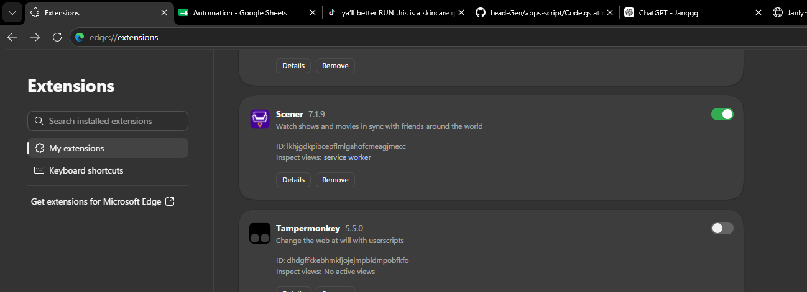
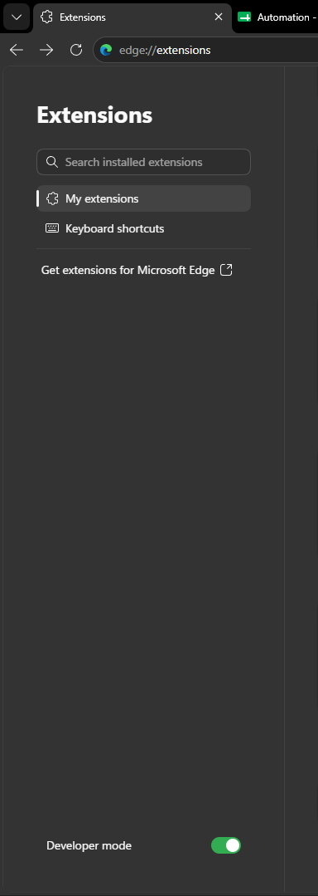
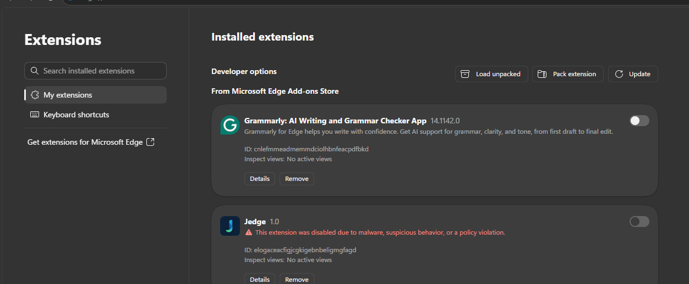
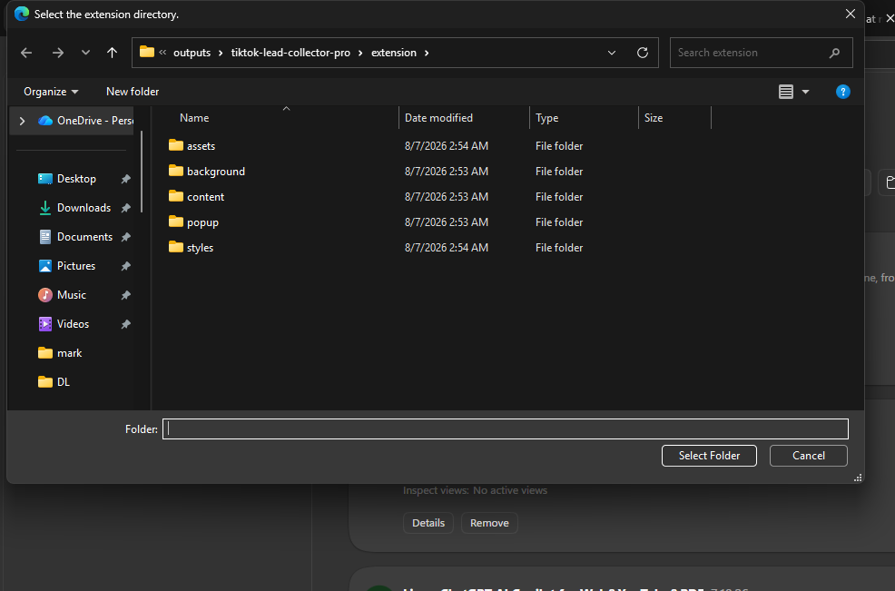
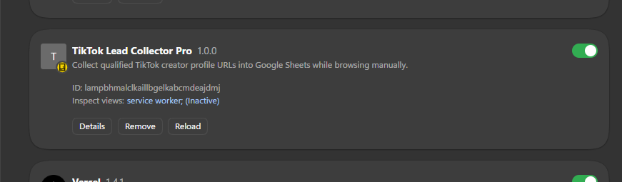

What It Does
Collects TikTok creator profile links, follower counts, profile bio, qualification status, notes, and duplicate checks for your Google Sheet workflow.
Created by Janlyn Rustila
Download the browser extension for saving qualified TikTok creators into your lead sheet while browsing TikTok manually.
If you see any problem, message me right away on WhatsApp: 09763532039.
Collects TikTok creator profile links, follower counts, profile bio, qualification status, notes, and duplicate checks for your Google Sheet workflow.
Janlyn Rustila handles support and setup questions for this extension.
Chat on WhatsAppTutorial
Follow these simple steps to install the extension on Google Chrome.

Screenshot 1 Website download buttonClick the Download Extension button on the website. A ZIP file containing the extension files will be downloaded to your computer.
Image guide: Click the Download Extension button on the website.

Screenshot 2 ZIP file downloadLocate the downloaded ZIP file, usually found inside the Downloads folder.
Right-click the ZIP file, then select Extract All or Extract Here. Make sure to remember where the extracted folder is saved.
Important: Do not delete or move the extracted folder after installing the extension because Chrome will continue using the files inside it.
Image guide: Find the downloaded ZIP file, usually in Downloads.

Screenshot 3 Open extensions page
Open Google Chrome and enter this address in the address bar:
chrome://extensions
Press Enter to open the Extensions page. You can also open it by clicking the three-dot menu, selecting Extensions, and then choosing Manage Extensions.
Image guide: Open the browser Extensions page.

Screenshot 4 Developer mode switchOn the Extensions page, find the Developer mode switch in the upper-right corner.
Turn on Developer mode. Additional extension-management buttons will appear on the page.
Image guide: Turn on Developer mode.

Screenshot 5 Load unpacked buttonClick the Load unpacked button. A folder-selection window will appear.
Image guide: Click Load unpacked after Developer mode is on.

Screenshot 6 Select extension folderNavigate to the location where you extracted the downloaded ZIP file.
Select the extension's main folder - the folder that directly contains the
manifest.json file - then click Select Folder.
You may also paste the folder location into the folder-selection window's address bar and press Enter.
Image guide: Select the extracted extension folder.

Screenshot 7 Installed extensionThe extension should now appear on the Chrome Extensions page.
Make sure its switch is turned on. You may also click the puzzle-piece icon beside the Chrome address bar and pin the extension for easier access.
The extension is now ready to use.
Image guide: Confirm TikTok Lead Collector Pro appears and is switched on.